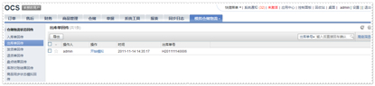

模拟仓储物流操作手册
前置
使用此功能, 请先将omevirtualwms app包放置到app/omevirtualwms目录下并进行安装
/data/www/ocs/app %> svn co https://app.ec-os.net/svn/omevirtualwms/trunk omevirtualwms ... /data/www/ocs/app %> cd base /data/www/ocs/app/base %> ./cmd install omevirtualwms ...
进入ocs可以看到菜单已经多了一个菜单组, 模拟仓储物流
仓储物流状态回传
用户根据不同的业务需求可以通过模拟仓储物流状态回传进行商品虚拟出入库等操作。
入库单回传
当操作员新建了一张入库单时，可以通过模拟入库单回传，进行商品虚拟入库。依次点击“模拟仓储物流——仓储物流状态回传——入库单回传”，输入入库单号进行搜索，对某一入库单进行回传，如图显示：

点击“操作——开始模拟”，系统显示入库单回传界面


- 选择入库单状态：（可直接选择全部入库）
- 接单失败：入库单接收失败
- 已接单：入库单接收成功
- 部分入库：已入库商品数量小于入库单中所有商品数量
- 全部入库：入库单中商品全部入库成功
- 取消：仓库接收到OCS发起的入库单取消指令同意取消此入库单
- 关闭：仓库发起入库单无效并关闭指令
- 填写入库商品明细
- 根据质检情况，填写商品良品、不良品数量。
- 提交
- 提交后，OCS系统会根据回传结果更改入库单单据状态以及商品库存情况
出库单回传
当操作员新建了一张出库单时，可以通过模拟出库单回传，进行商品虚拟出库。依次点击“模拟仓储物流——仓储物流状态回传——出库单回传”，输入出库单号进行搜索，对某一出库单进行回传。如图所示：

点击“操作——开始模拟”，系统显示出库单回传界面

- 选择出库单状态：（可直接选择全部出库）
- 接单失败：出库单接收失败
- 已接单：出库单接收成功
- 部分入库：已出库商品数量小于出库单中所有商品数量
- 全部入库：出库单中商品全部出库成功
- 取消：仓库接收到OCS发起的出库单取消指令并同意取消此出库单
- 关闭：仓库发起出库单无效并关闭指令
- 填写出库商品明细
- 填写商品出库数量。
- 提交
- 提交后，OCS系统会根据回传结果更改出库单单据状态以及商品库存情况
发货单回传
当系统生成发货单时，可以通过模拟发货单回传，进行商品虚拟发货。依次点击“模拟仓储物流——仓储物流状态回传——发货单回传”，如下图所示：
输入发货单号进行搜索，对某一发货单进行回传。

点击“操作——开始模拟”，系统显示发货单回传界面
- 选择发货单状态：（可以直接选择已发货）

- 接单失败：发货库单接收失败
- 已接单：发货单接收成功
- 已打印：发货单据已打印
- 已拣配：配货完成
- 已校验：商品校验完成
- 已打包：发货单商品已打包
- 已发货：发货单商品已发货
- 选择物流公司（物流公司为系统配置的物流公司）
- 填写商品包裹重量
- 重量不为空，可填写0
- 提交
- 提交后，OCS系统会根据回传结果更改发货单单据状态以及商品库存情况
退货单回传
当系统生成退货单时，可以通过模拟退货单回传，进行商品虚拟退货。依次点击“模拟仓储物流——仓储物流状态回传——退货单回传”，如下图所示：
输入退货单号进行搜索，对某一退货单进行回传。
点击“操作——开始模拟”，系统显示退货单回传界面

- 选择退货单状态：（可以直接选择收货完成）
- 接单失败：退货库单接收失败
- 已接单：退货单接收成功
- 收货完成：售后商品入库成功
- 拒绝：拒绝售后商品入库
- 填写退货商品明细
- 根据质检结果，填写良品、不良品数量
- 提交
- 提交后，OCS系统会根据回传结果更改退货单单据状态以及商品库存情况
盘点结果回传
根据业务需求，对库存商品进行盘点结果回传，进行虚拟盘点。依次点击“模拟仓储物流——仓储物流状态回传——盘点结果回传”，如下图所示：

- 填写盘点单号
- 选择盘点仓库（此仓库为系统配置的仓库）
- 填写盘点结果（货号、良品、不良品数量）
- 提交
- 提交后，OCS系统会记录此盘点结果，生成盘点申请单
库存对账结果回传
根据业务需求，对库存对账结果回传，进行虚拟库存对账。
依次点击“模拟仓储物流——仓储物流状态回传——库存对账结果回传”，如下图所示：

- 选择对账仓库（此仓库为系统配置的仓库）
- 选择商品属性
- 良品、不良品
- 填写库存商品明细
- 货号、商品数量
- 提交
- 提交后，OCS系统会记录此对账结果，并与系统库存情况进行对比，生成库存对账报表。
商品同步状态模拟回传
根据业务需求，对商品同步状态回传，进行虚拟商品同步。依次点击“模拟仓储物流——仓储物流状态回传——商品同步状态模拟回传”，如下图所示：

点击“操作——开始模拟”，OCS系统记录此商品同步状态回传结果，并将此商品同步状态更改为已同步。